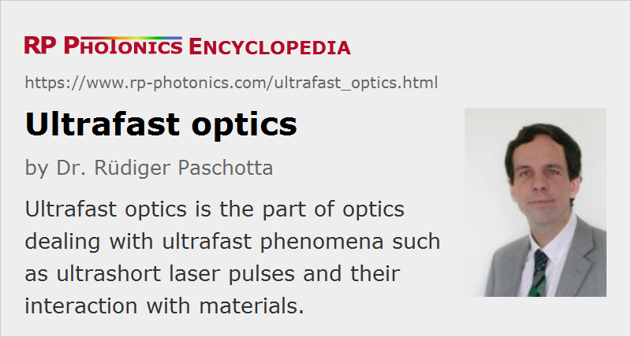

Ultrafast Optics
Definition: the part of optics dealing with ultrafast phenomena
More general term: optics
How to cite the article; suggest additional literature
Author: Dr. Rüdiger Paschotta
The term “ultrafast optics” occurs with two different meanings, which are treated in the following sections.
Ultrafast Optics as a Field of Physics
Ultrafast optics is the part of optics dealing with ultrafast phenomena, i.e. phenomena which occur on a time scale of picoseconds or less. Typically, ultrafast optics experiments involve ultrashort pulses as generated with mode-locked lasers (→ ultrafast laser physics).
As ultrafast phenomena are too fast to be directly monitored with electronics, optical techniques, such as pump–probe measurements, are required. With such techniques, phenomena occurring on time scales of picoseconds or femtoseconds can be monitored. Examples of such phenomena are femtosecond dynamics of electrons (particularly in solids, e.g. in semiconductor devices such as SESAMs), light-induced phase changes (e.g. melting or vaporization of metals), chemical reactions, and processes in plasmas.
Currently, ultrafast optics is being extended into the sub-femtosecond region, where attosecond pulses (or pulse trains) are obtained, e.g. via high harmonic generation with intense ultrashort pulses.
Optical Elements for Ultrafast Optics
Ultrafast optics can also denote optical elements which are specifically made or optimized for use in the field of ultrafast optics. Usually, optical elements are optimized such that one can send ultrashort pulses through them while avoiding excessive detrimental effects e.g. of chromatic dispersion and/or optical nonlinearities, or providing a suitable amount e.g. of chromatic dispersion for manipulation of the pulses.
Some examples for ultrafast optics are discussed in the following:
- There are low-dispersion mirrors, where substantial temporal pulse broadening is avoided. On the other hand, there are special dispersive mirrors for applying some significant amount of chromatic dispersion, e.g. for the purpose of dispersion compensation in the laser resonator of a mode-locked laser.
- There are also optical component and arrangements for substantially larger amounts of chromatic dispersion, as used e.g. for pulse compression, possibly also for pulse stretching e.g. in the context of chirped-pulse amplification. Examples for such components are chirped volume Bragg gratings, optical setups involving one or more diffraction gratings (possibly combined with mirrors or prisms), and special optical fibers.
- Saturable absorbers, particularly often in the form of semiconductor saturable absorber mirrors (SESAMs) are often used for initiating and stabilizing passive mode locking of lasers.
- Some types of optical modulators, e.g. electro-optic modulators, can be used as pulse pickers.
- There are special optical fibers – frequently photonic crystal fibers – which are optimized for delivering ultrashort light pulses. For example, one can use hollow-core fibers to minimize nonlinear effects.
Suppliers
The RP Photonics Buyer's Guide contains 14 suppliers for ultrafast optics. Among them:
Questions and Comments from Users
Here you can submit questions and comments. As far as they get accepted by the author, they will appear above this paragraph together with the author’s answer. The author will decide on acceptance based on certain criteria. Essentially, the issue must be of sufficiently broad interest.
Please do not enter personal data here; we would otherwise delete it soon. (See also our privacy declaration.) If you wish to receive personal feedback or consultancy from the author, please contact him e.g. via e-mail.
By submitting the information, you give your consent to the potential publication of your inputs on our website according to our rules. (If you later retract your consent, we will delete those inputs.) As your inputs are first reviewed by the author, they may be published with some delay.
See also: ultrashort pulses, ultrafast laser physics, ultrafast lasers, picosecond lasers, femtosecond lasers, pump–probe measurements
and other articles in the category light pulses
|  |
If you like this page, please share the link with your friends and colleagues, e.g. via social media:
These sharing buttons are implemented in a privacy-friendly way!